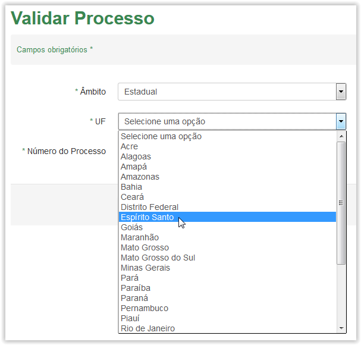

Validar Processo
Para validar um processo clique na opção Processo no menu do sistema:

Menu do sistema SGDoc-e
A tela Validar Processo será apresentada. Observe que a tela possui campo obrigatório (Veja Nota 1):
Tela de Validar Processo
O campo Âmbito possui uma lista com as seguintes opções: Federal, Estadual, Municipal e Judicial:
Selecionando o âmbito do processo
 Preenchendo a Validação do Processo!!
Preenchendo a Validação do Processo!!
Tela de Validar Processo - Âmbito Federal

Selecionando uma UF na lista do campo UF
Tela de Validar Processo - Âmbito Estadual
Selecionando uma UF na lista do campo UF
Selecionando um Município na lista do campo Município
Tela de Validar Processo - Âmbito Municipal

Tela de Validar Processo - Âmbito Municipal
Mensagem de erro
IMPORTANTE!!
 Lembrete:
Lembrete:
A opção de Número de Processo com 21 dígitos está desabilitada até a data que o sistema passará a fazer parte do protocolo integrado. Portaria Interministerial nº 2.320 de dezembro/2014.
 Nota 1:
Nota 1:
Os campos obrigatórios são indicados pelo sinal de asterisco (*) na cor verde ao lado do nome. O campo Comentário, portanto, é obrigatório, ou seja, se houver uma tentativa de salvar o comentário em branco, o sistema apresenta uma mensagem de erro: "Campos de preenchimento obrigatório não foram preenchidos.".
Comportamento da tela Validar Processo ao tentar validar um número de processo em branco.
Created with the Personal Edition of HelpNDoc: Write eBooks for the Kindle